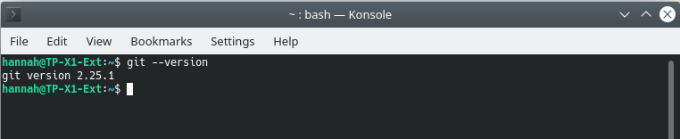
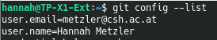
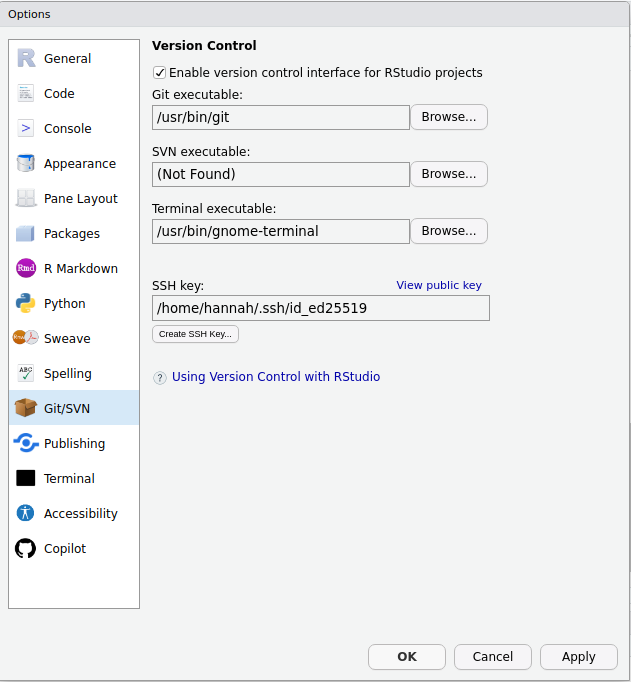
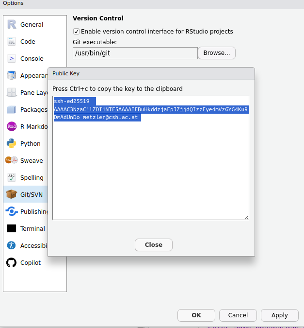

Preparation for Lesson 2
1 Setting up Git & Github
More details if you need help here on GitHub.
1.1 Get a GitHub account
1.2 Check if Git is already installed
In the bottom left pane in Rstudio, Click on Terminal next to Console (or open the Terminal/Console/Shell outside of Rstudio).
- type
git –-version - If you get a version number, it’s installed! Go to step 4.
- If not, go to step 3.
1.3 Download and install the latest version of Git
1.4 Configure Git on your computer
Type this in your Terminal, and make sure to leave white spaces after git and config. Bash (the coding language of the Terminal) does interpret white spaces. (R does not.).
git config --global user.name "Your name here"
git config --global user.email "your_email@example.com"
#now check your configuration:
git config --list After configuration, it should look like this:

1.5 Activate Version Control with Git in Rstudio
- Under
Tools->Global Optionsselect Git/SVN - Make sure the box
Enable version controlis checked. - Is there a path in
Git executable? Otherwise set it to where git is installed on your PC
We will keep coming back to this window.

1.6 Connect Git on your PC with your GitHub account
The idea
We create an SSH key (a pass phrase), and give it to Rstudio and GitHub, so they recognize each other.
1.6.1 Create an SSH key
- In the
Optionswindow (above), clickCreate SSH Key... - If this does not work, enter this in the Terminal:
$ ssh-keygen -t ed25519 -C "your_email@example.com"- Press enter 3 times (or optionally enter a password when prompted):
Enter file in which to save the key (/home/hannah/.ssh/id_rsa): [Press enter]Enter passphrase (empty for no passphrase):[Press enter]Enter same passphrase again:[Press enter]
- In the
Optionswindow, there should now be a path for SSH RSA key. (Close once and reopen otherwise)
1.6.2 Get the SSH key into Github
- Click
View public keyin theOptionswindow.

- Copy the key
- Go to your GitHub account settings
- Click SSH and GPG keys on the left

- Click “New SSH Key” on the right.
- Add a Title (like “My work laptop”), paste the public key into Key, click Add SSH key.
More details here if you need more help.
Done!
Git and GitHub should now be up and running for our next class!